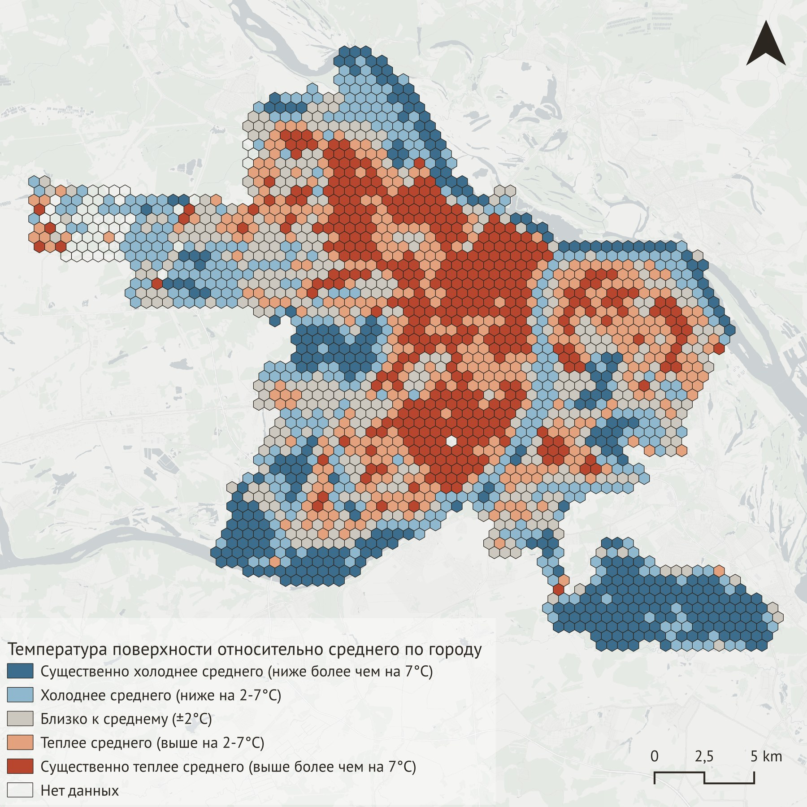
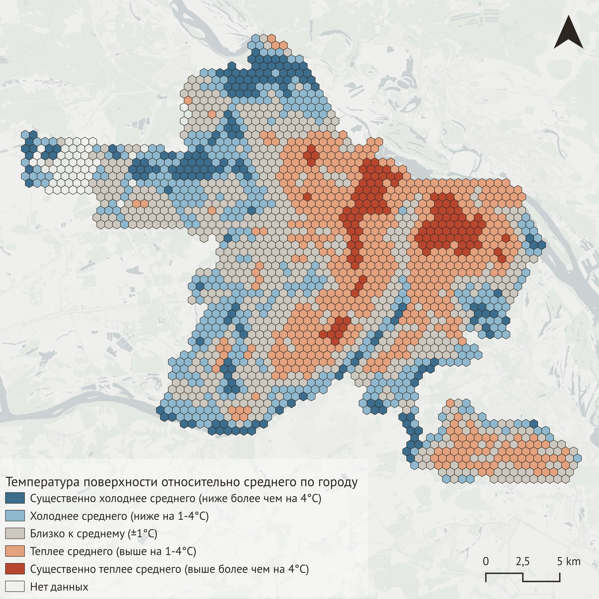
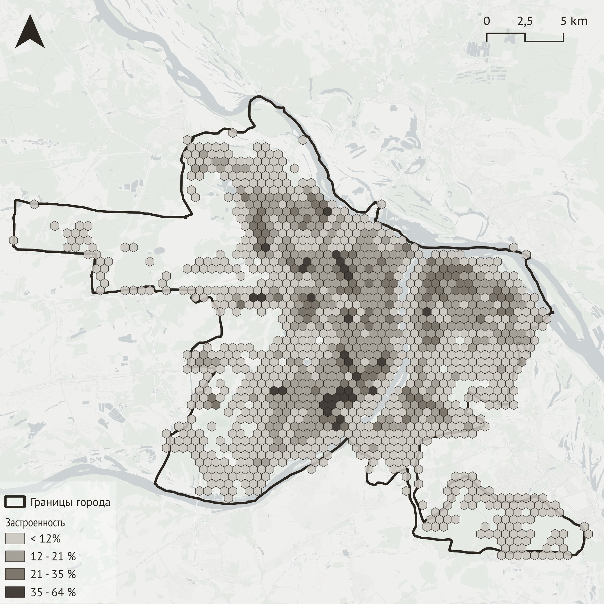
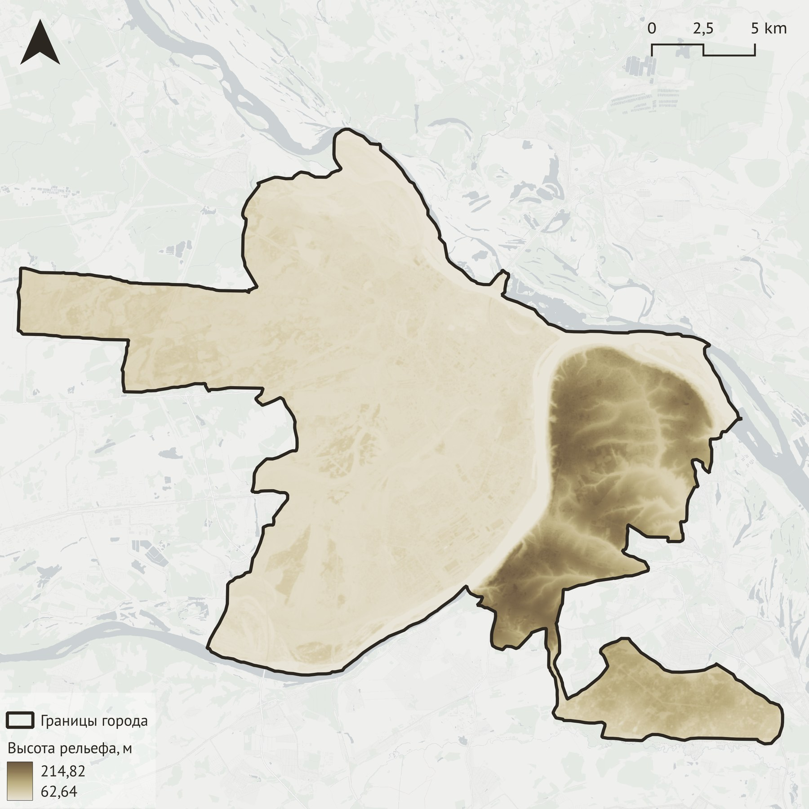
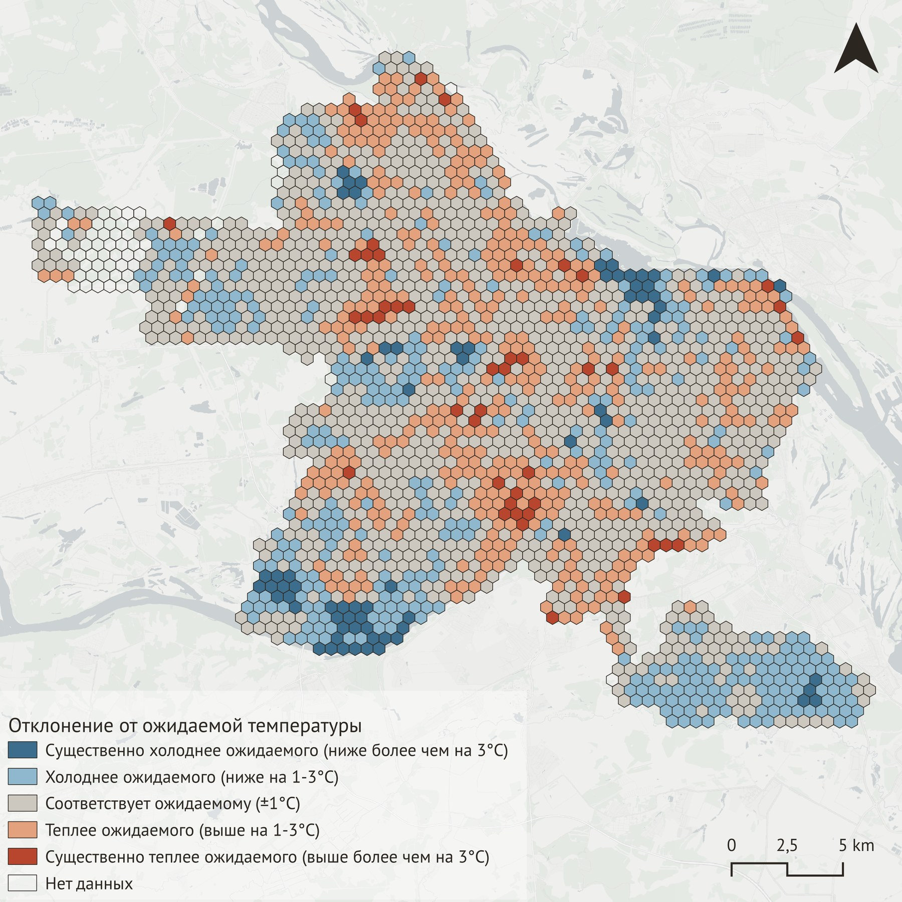
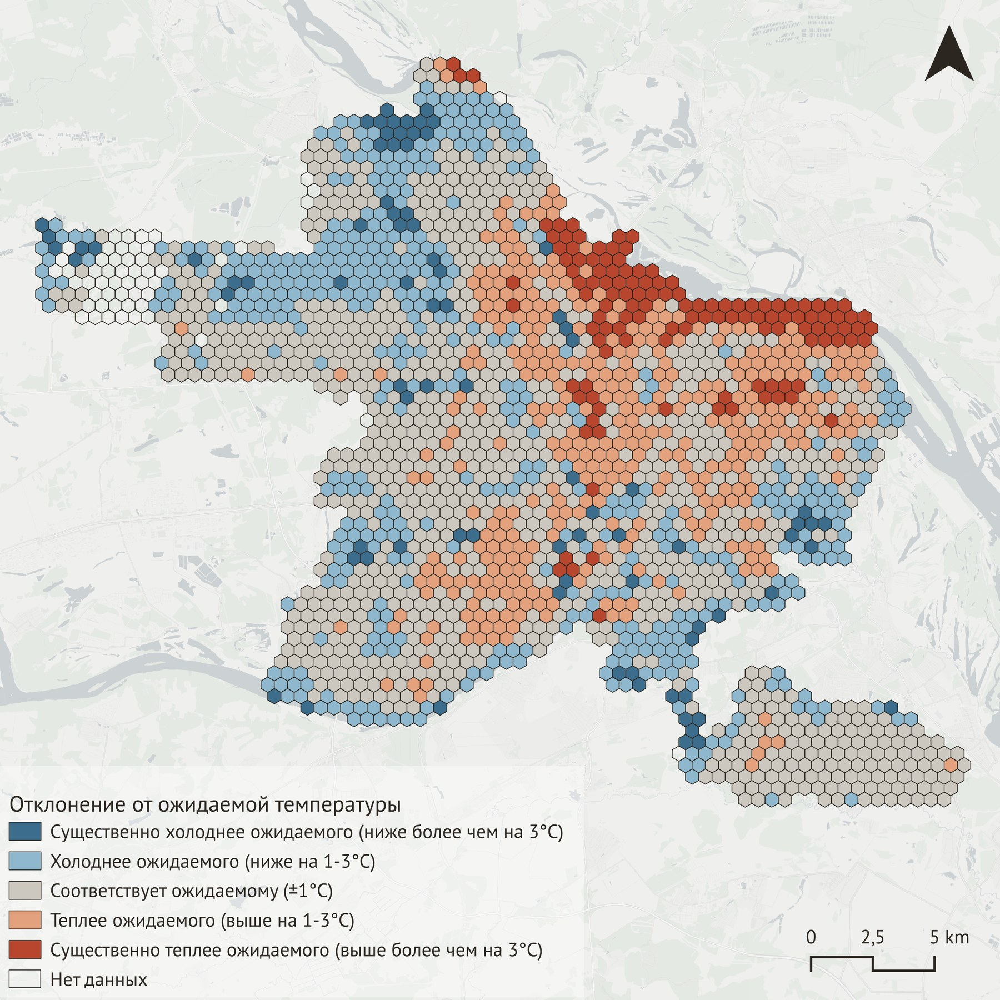

Суть проекта
Был проведен анализ городского острова тепла в Нижнем Новгороде на спутниковых снимках Landsat. Территория города была разбита на гексагональную сетку; для каждой ячейки по летнему и зимнему снимку отдельно рассчитаны температура поверхности, растительный индекс, индекс застройки, высота рельефа и расстояние до воды. По этим показателям для каждого сезона построена регрессионная модель, объясняющая температуру поверхности физическими характеристиками территории, и отдельно проанализированы ее остатки - участки, где реальная температура расходится с предсказанной.
Методология
Данные
Температура поверхности взята из готового продукта Landsat Collection 2
Level-2 (термоканал Band 10, одноканальный алгоритм USGS с атмосферной
коррекцией на стороне USGS). Доступ к снимкам - через каталог Microsoft
Planetary Computer (pystac-client, planetary-computer).
Использованы два снимка Landsat 8: лето - 21 июня 2020 (сцена
LC08_L2SP_174021_20200621_02_T1), зима - 3 февраля 2022
(сцена LC08_L2SP_174021_20220203_02_T1).
Поверх границы Нижнего Новгорода (векторные слои - geopandas/shapely)
построена сетка из 2057 гексагонов (площадь ячейки ≈0.26 км², радиус
≈310 м); зональная статистика по ней считалась через rasterstats.
После очистки полными данными остались 2002 ячейки - снимки Landsat не
покрывают городской округ целиком. Высота рельефа - Copernicus DEM
GLO-30. Растительность (NDVI) и индекс застройки по цвету (NDBI, только
летом - зимний NDBI искажен снегом) рассчитаны из тех же снимков
Landsat. Отдельно, через пространственное пересечение геометрий,
рассчитана доля площади гексагона, физически занятая контурами зданий
(данные получены через osmnx). Расстояние до воды считалось
от границы гексагона до ближайшего водного полигона OSM.
Оценка модели
Для каждого сезона температура поверхности гексагона объяснялась
отдельной множественной линейной регрессией (OLS, библиотека
statsmodels) по одному и тому же составу предикторов (кроме
NDBI, использованного только летом). Перед оценкой все переменные
стандартизированы (z-score), чтобы коэффициенты были сравнимы по силе
эффекта между собой, несмотря на разные единицы измерения.
Результаты






Летом модель объясняет 89% разброса температуры по гексагонам (R²=0.890), зимой - всего 47% (R²=0.465). При этом у высоты рельефа и растительности эффект на температуру между сезонами меняется на противоположный. Летом чем выше участок, тем он холоднее, а зимой - наоборот, теплее: похоже на температурную инверсию, когда в морозную погоду холодный воздух стекает вниз и застаивается в низинах. С растительностью похожая история: летом она охлаждает, а зимой слегка греет - вероятно потому что темная хвоя (единственная зелень зимой) поглощает солнце сильнее, чем снег вокруг.
В зимних остатках регрессии заметна устойчивая теплая аномалия вдоль русла реки в районе Стрелки - слияния Оки и Волги: температура здесь систематически выше, чем предсказывают застройка, растительность, рельеф и расстояние до воды. Летом сопоставимой по четкости структуры в остатках не наблюдается. Среди возможных причин: нелинейный характер охлаждающего эффекта воды у самого берега, особенности плотной исторической застройки набережных, однако это требует дополнительной проверки.